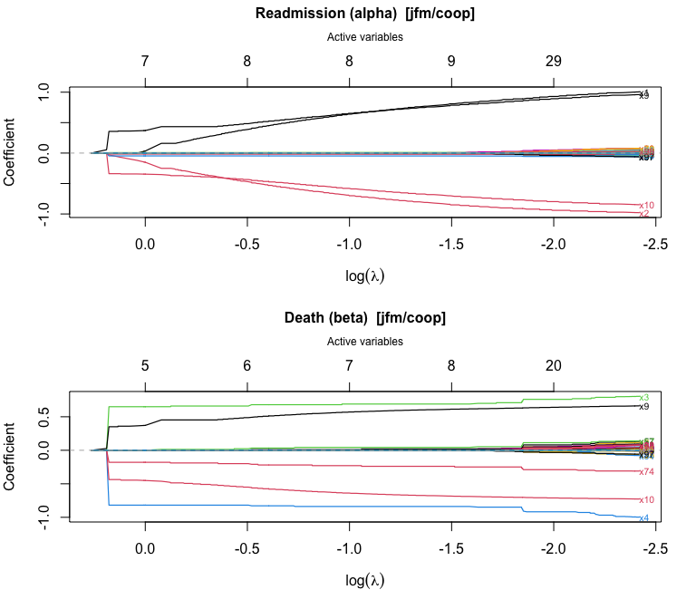
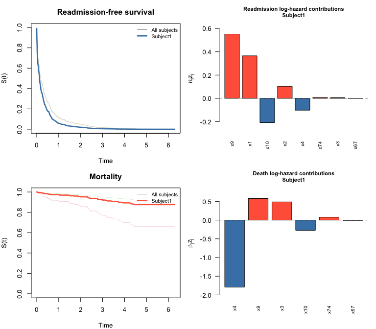
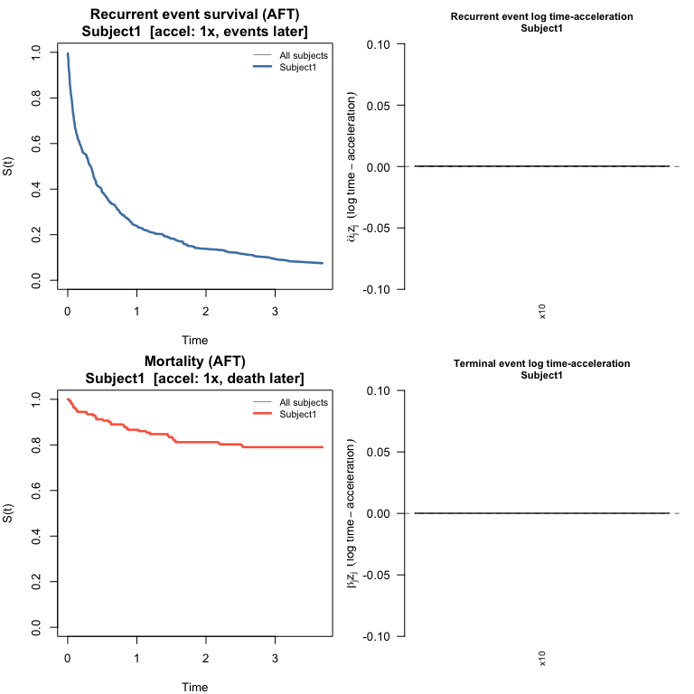
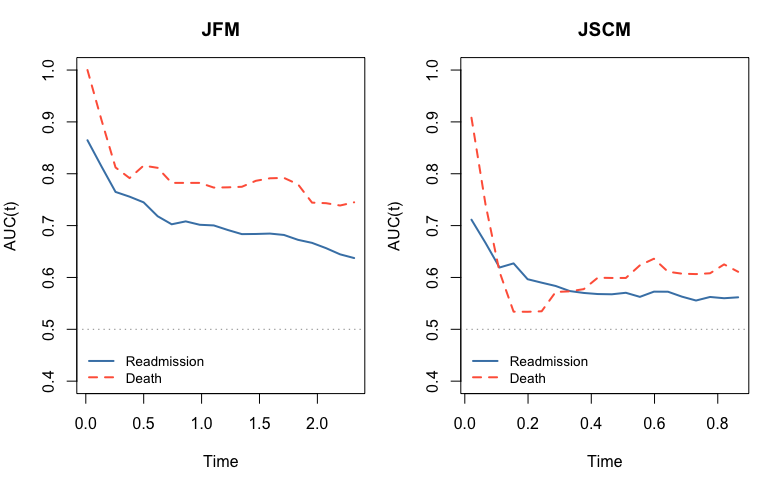

-
swjm: Stagewise Variable Selection for Joint Models of Semi-Competing Risks
- Overview
- Installation
- Data format
-
Workflow
- 1. Simulate data
- 2. Fit the stagewise regularization path
- 3. Plot the coefficient path
- 4. Cross-validation to select the tuning parameter
- 5. Plot the cross-validation results
- 6. Summarize the chosen model
- 7. Baseline hazard
- 8. Predict survival curves
- 9. Plot survival curves and predictor contributions
- 10. JSCM workflow (cross-validation + survival prediction)
- 11. Other penalties
- 12. Model evaluation
- Package conventions
Overview
swjm implements stagewise (forward-stepwise) variable selection for joint models of recurrent events and terminal events (semi-competing risks). Two model frameworks are supported:
| Model | Type |
alpha (first p) |
beta (second p) |
|---|---|---|---|
| JFM | Cox frailty | recurrence/readmission | terminal/death |
| JSCM | Scale-change (AFT) | recurrence/readmission | terminal/death |
Three penalty types are available: cooperative lasso ("coop"), lasso ("lasso"), and group lasso ("group"). The cooperative lasso encourages shared support between the readmission and death coefficient vectors.
Data format
All functions expect a data frame with columns id, t.start, t.stop, event (1 = readmission, 0 = terminal/censoring row), status (1 = death, 0 = alive/censored), and covariate columns x1, ..., xp.
Workflow
1. Simulate data
library(swjm)
# Joint Frailty Model — scenario 1
set.seed(42)
dat_jfm <- generate_data(n = 200, p = 100, scenario = 1, model = "jfm")
Data_jfm <- dat_jfm$data
# JSCM — same scenario
set.seed(42)
dat_jscm <- generate_data(n = 200, p = 100, scenario = 1, model = "jscm")
#> Call:
#> reReg::simGSC(n = n, summary = TRUE, para = para, xmat = X, censoring = C,
#> frailty = gamma, tau = 60)
#>
#> Summary:
#> Sample size: 200
#> Number of recurrent event observed: 343
#> Average number of recurrent event per subject: 1.715
#> Proportion of subjects with a terminal event: 0.175
Data_jscm <- dat_jscm$dataJFM data: n = 200 subjects, 380 readmission events, 40 deaths
2. Fit the stagewise regularization path
fit_jfm <- stagewise_fit(Data_jfm, model = "jfm", penalty = "coop")
fit_jfm
#> Stagewise path (jfm/coop)
#>
#> Covariates (p): 100
#> Iterations: 5000
#> Lambda range: [0.07494, 1.398]
#> Active at final step: 42 readmission, 31 death
#> Readmission (alpha): 1, 2, 3, 4, 5, 8, 9, 10, 11, 12, 13, 14, 15, 18, 23, 28, 32, 41, 44, 50, 52, 56, 60, 63, 64, 67, 69, 70, 71, 73, 74, 76, 77, 78, 79, 80, 82, 83, 85, 87, 92, 95
#> Death (beta): 1, 2, 3, 4, 5, 8, 9, 10, 11, 12, 13, 28, 32, 41, 50, 52, 56, 60, 64, 67, 69, 74, 76, 77, 78, 79, 82, 83, 85, 92, 98The fit object now exposes alpha (readmission) and beta (death) as separate p × (k+1) matrices — one column per stagewise step — in addition to the combined theta matrix (2p × (k+1)):
- alpha matrix: 100 rows x 5001 columns
- beta matrix: 100 rows x 5001 columns
Nonzero alpha entries at final step:
a_final[a_final != 0]
#> [1] 1.0057 -1.0755 0.0473 -0.0357 0.0050 0.0130 1.0393 -0.9826 0.0197
#> [10] 0.0033 -0.0175 -0.0170 0.0960 -0.0430 0.0520 -0.0030 -0.0232 -0.0233
#> [19] 0.0460 0.0341 -0.0407 0.0029 -0.0149 0.0300 -0.0009 -0.0020 -0.0080
#> [28] 0.0060 0.0130 0.0470 -0.0029 -0.0292 0.0376 -0.0059 0.0475 0.1000
#> [37] -0.0285 0.0040 -0.1150 0.0420 -0.0685 -0.0160summary() shows a compact table of path-end coefficients with variable type (shared, readmission-only, or death-only):
summary(fit_jfm)
#> Stagewise path (jfm/coop)
#>
#> p = 100 | 5000 iterations | lambda: [0.07494, 1.398]
#> Decreasing path: 976 steps
#>
#> Path-end coefficients (nonzero variables):
#>
#> Variable alpha beta Type
#> ---------- ---------- ---------- ----------------
#> x9 +1.0393 +1.0173 shared (+)
#> x10 -0.9826 -0.7978 shared (+)
#> x2 -1.0755 -0.2533 shared (+)
#> x1 +1.0057 +0.0895 shared (+)
#> x3 +0.0473 +0.6478 shared (+)
#> x4 -0.0357 -0.7006 shared (+)
#> x11 +0.0197 +0.0347 shared (+)
#> x15 +0.0960 — readmission only
#> x85 -0.1150 -0.0001 shared (+)
#> x79 +0.0475 +0.0499 shared (+)
#> x80 +0.1000 — readmission only
#> x92 -0.0685 -0.0084 shared (+)
#> x32 -0.0232 -0.0206 shared (+)
#> x73 +0.0470 — readmission only
#> x87 +0.0420 — readmission only
#> x44 +0.0460 — readmission only
#> x52 -0.0407 -0.0049 shared (+)
#> x77 +0.0376 +0.0298 shared (+)
#> x23 +0.0520 — readmission only
#> x18 -0.0430 — readmission only
#> x50 +0.0341 +0.0080 shared (+)
#> x98 — -0.0100 death only
#> x60 -0.0149 -0.0083 shared (+)
#> x63 +0.0300 — readmission only
#> x41 -0.0233 -0.0057 shared (+)
#> x76 -0.0292 -0.0067 shared (+)
#> x82 -0.0285 -0.0056 shared (+)
#> x13 -0.0175 -0.0149 shared (+)
#> x14 -0.0170 — readmission only
#> x8 +0.0130 +0.0051 shared (+)
#> x78 -0.0059 -0.0054 shared (+)
#> x95 -0.0160 — readmission only
#> x69 -0.0080 -0.0000 shared (+)
#> x71 +0.0130 — readmission only
#> x5 +0.0050 +0.0049 shared (+)
#> x83 +0.0040 +0.0004 shared (+)
#> x70 +0.0060 — readmission only
#> x28 -0.0030 -0.0003 shared (+)
#> x12 +0.0033 +0.0023 shared (+)
#> x56 +0.0029 +0.0008 shared (+)
#> x74 -0.0029 -0.0008 shared (+)
#> x67 -0.0020 -0.0002 shared (+)
#> x64 -0.0009 -0.0004 shared (+)
#>
#> Inactive: x6, x7, x16, x17, x19, x20, x21, x22, x24, x25, x26, x27, x29, x30, x31, x33, x34, x35, x36, x37, x38, x39, x40, x42, x43, x45, x46, x47, x48, x49, x51, x53, x54, x55, x57, x58, x59, x61, x62, x65, x66, x68, x72, x75, x81, x84, x86, x88, x89, x90, x91, x93, x94, x96, x97, x99, x1003. Plot the coefficient path
plot() produces a glmnet-style coefficient trajectory plot with the number of active variables on the top axis:
plot(fit_jfm)
4. Cross-validation to select the tuning parameter
cv_stagewise() evaluates a cross-fitted estimating-equation score norm over a grid of lambda values.
lambda_path <- fit_jfm$lambda
dec_idx <- swjm:::extract_decreasing_indices(lambda_path)
lambda_seq <- lambda_path[dec_idx]
cv_jfm <- cv_stagewise(
Data_jfm, model = "jfm", penalty = "coop",
lambda_seq = lambda_seq, K = 3L
)
cv_jfm
#> Cross-validation (jfm/coop)
#>
#> Covariates (p): 100
#> Lambda grid size: 976
#> Best position (combined): 660 (lambda = 0.1791)
#> Selected variables: 11 readmission, 9 death
#> Readmission (alpha): 1, 2, 3, 4, 9, 10, 11, 15, 79, 80, 85
#> Death (beta): 1, 2, 3, 4, 9, 10, 11, 79, 85The CV object stores alpha and beta at the optimal lambda, plus n_active_alpha, n_active_beta, and n_active variable-count vectors across the full lambda grid.
6. Summarize the chosen model
# summary() shows a formatted table of selected coefficients
summary(cv_jfm)
#> CV-selected model (jfm/coop)
#>
#> p = 100 | Lambda grid: 976 steps | CV optimal: step 660 (lambda = 0.1791)
#>
#> Selected coefficients (11 readmission, 9 death):
#>
#> Variable alpha beta Type
#> ---------- ---------- ---------- ----------------
#> x9 +0.9082 +0.9743 shared (+)
#> x10 -0.8719 -0.7601 shared (+)
#> x2 -0.9562 -0.2333 shared (+)
#> x1 +0.8745 +0.0743 shared (+)
#> x4 -0.0284 -0.6810 shared (+)
#> x3 +0.0451 +0.6280 shared (+)
#> x85 -0.0500 -0.0001 shared (+)
#> x79 +0.0196 +0.0227 shared (+)
#> x15 +0.0400 — readmission only
#> x11 +0.0088 +0.0179 shared (+)
#> x80 +0.0200 — readmission only
#>
#> Inactive (89): x5, x6, x7, x8, x12, x13, x14, x16, x17, x18, x19, x20, x21, x22, x23, x24, x25, x26, x27, x28, x29, x30, x31, x32, x33, x34, x35, x36, x37, x38, x39, x40, x41, x42, x43, x44, x45, x46, x47, x48, x49, x50, x51, x52, x53, x54, x55, x56, x57, x58, x59, x60, x61, x62, x63, x64, x65, x66, x67, x68, x69, x70, x71, x72, x73, x74, x75, x76, x77, x78, x81, x82, x83, x84, x86, x87, x88, x89, x90, x91, x92, x93, x94, x95, x96, x97, x98, x99, x100Direct access to selected coefficients:
# coef() returns the combined numeric vector c(alpha, beta) for compatibility
theta_best <- coef(cv_jfm)- Selected readmission (alpha) variables: 1 2 3 4 9 10 11 15 79 80 85
- Selected death (beta) variables: 1 2 3 4 9 10 11 79 85
7. Baseline hazard
baseline_hazard() evaluates the cumulative baseline hazards at any desired time points (Breslow for JFM; Nelson-Aalen on the accelerated scale for JSCM):
bh <- baseline_hazard(cv_jfm, times = c(0.5, 1.0, 2.0, 4.0, 6.0))
print(bh)
#> time cumhaz_readmission cumhaz_death
#> 1 0.5 0.5413721 0.05158303
#> 2 1.0 1.0867282 0.09165145
#> 3 2.0 2.2307707 0.12686943
#> 4 4.0 3.9464618 0.27026914
#> 5 6.0 5.0814435 0.395878998. Predict survival curves
predict() computes subject-specific readmission-free and death-free survival curves, together with the per-predictor contributions to each linear predictor:
# Three hypothetical new subjects (covariate vectors of length p = 100)
set.seed(7)
newz <- matrix(rnorm(300), nrow = 3, ncol = 100)
colnames(newz) <- paste0("x", 1:100)
pred <- predict(cv_jfm, newdata = newz)
pred
#> swjm predictions (jfm)
#>
#> Subjects: 3
#> Time points: 420
#> Time range: [0.0007179, 6.031]
#>
#> Use plot() to visualize survival curves and predictor contributions.
# S_re: readmission-free survival — first 10 time points
round(pred$S_re[, 1:10], 3)
#> t=0.0007179 t=0.0008073 t=0.001802 t=0.002649 t=0.004176 t=0.00435
#> Subject1 0.979 0.959 0.937 0.910 0.884 0.859
#> Subject2 0.998 0.996 0.993 0.990 0.987 0.984
#> Subject3 0.997 0.994 0.991 0.987 0.982 0.978
#> t=0.005724 t=0.0076 t=0.008105 t=0.008355
#> Subject1 0.831 0.803 0.803 0.774
#> Subject2 0.981 0.977 0.977 0.974
#> Subject3 0.974 0.969 0.969 0.964
# Predictor contributions for subject 1 — show only nonzero entries
contrib1 <- round(pred$contrib_re[1, ], 3)
contrib1[contrib1 != 0]
#> x1 x2 x3 x4 x9 x10 x11 x15 x79 x85
#> 2.000 0.394 0.034 -0.062 1.156 -0.516 -0.008 -0.011 0.030 0.0679. Plot survival curves and predictor contributions
plot() on a swjm_pred object draws four panels: survival curves for both processes (all subjects in grey, highlighted subject in color) plus bar charts of predictor contributions for the selected subject.
plot(pred, which_subject = 1)
10. JSCM workflow (cross-validation + survival prediction)
The same workflow applies to the JSCM. baseline_hazard() and predict() now work for both models: for JSCM, survival curves are estimated via a Nelson-Aalen baseline on the accelerated time scale. In the AFT interpretation, is the time-acceleration factor for subject : greater than 1 means events happen sooner, less than 1 means later.
fit_jscm <- stagewise_fit(Data_jscm, model = "jscm", penalty = "coop")
lambda_path_jscm <- fit_jscm$lambda
dec_idx_jscm <- swjm:::extract_decreasing_indices(lambda_path_jscm)
lambda_seq_jscm <- lambda_path_jscm[dec_idx_jscm]
cv_jscm <- cv_stagewise(
Data_jscm, model = "jscm", penalty = "coop",
lambda_seq = lambda_seq_jscm, K = 3L
)
summary(cv_jscm)
#> CV-selected model (jscm/coop)
#>
#> p = 100 | Lambda grid: 170 steps | CV optimal: step 86 (lambda = 0.3336)
#>
#> Selected coefficients (21 readmission, 16 death):
#>
#> Variable alpha beta Type
#> ---------- ---------- ---------- ----------------
#> x10 -1.0165 -0.7983 shared (+)
#> x9 +0.8382 +0.3352 shared (+)
#> x4 — -1.0490 death only
#> x1 +0.6502 -0.0500 shared (–)
#> x2 -0.4481 — readmission only
#> x69 -0.2195 -0.1545 shared (+)
#> x37 -0.0316 -0.3284 shared (+)
#> x7 +0.2071 +0.1207 shared (+)
#> x23 — -0.2300 death only
#> x41 -0.2200 — readmission only
#> x6 +0.1900 — readmission only
#> x57 -0.1153 -0.0320 shared (+)
#> x12 +0.0322 +0.1051 shared (+)
#> x30 +0.1300 — readmission only
#> x53 -0.0849 -0.0298 shared (+)
#> x42 +0.0015 +0.0700 shared (+)
#> x68 +0.0500 — readmission only
#> x28 +0.0017 +0.0400 shared (+)
#> x39 +0.0400 — readmission only
#> x32 +0.0300 — readmission only
#> x66 — -0.0200 death only
#> x8 +0.0096 +0.0028 shared (+)
#> x18 +0.0098 +0.0022 shared (+)
#> x60 -0.0100 — readmission only
#>
#> Inactive (76): x3, x5, x11, x13, x14, x15, x16, x17, x19, x20, x21, x22, x24, x25, x26, x27, x29, x31, x33, x34, x35, x36, x38, x40, x43, x44, x45, x46, x47, x48, x49, x50, x51, x52, x54, x55, x56, x58, x59, x61, x62, x63, x64, x65, x67, x70, x71, x72, x73, x74, x75, x76, x77, x78, x79, x80, x81, x82, x83, x84, x85, x86, x87, x88, x89, x90, x91, x92, x93, x94, x95, x96, x97, x98, x99, x100
set.seed(7)
newz_jscm <- matrix(runif(600, -1, 1), nrow = 3, ncol = 100)
#> Warning in matrix(runif(600, -1, 1), nrow = 3, ncol = 100): data length differs
#> from size of matrix: [600 != 3 x 100]
pred_jscm <- predict(cv_jscm, newdata = newz_jscm)Recurrence time-acceleration factors:
round(pred_jscm$time_accel_re, 3)
#> Subject1 Subject2 Subject3
#> 7.648 0.167 0.726plot() draws the same four-panel layout as for JFM: survival curves for both processes plus bar charts of log time-acceleration contributions.
plot(pred_jscm, which_subject = 1)
11. Other penalties
fit_lasso <- stagewise_fit(Data_jfm, model = "jfm", penalty = "lasso")
cv_lasso <- cv_stagewise(Data_jfm, model = "jfm", penalty = "lasso", K = 3L)
summary(cv_lasso)
fit_group <- stagewise_fit(Data_jfm, model = "jfm", penalty = "group")
cv_group <- cv_stagewise(Data_jfm, model = "jfm", penalty = "group", K = 3L)
summary(cv_group)12. Model evaluation
12.1 Coefficient recovery
Compare CV-optimal estimates to the true generating coefficients. Variables that are truly nonzero or were selected are shown; all others were correctly excluded.
p <- 100
# JFM: variables of interest (true signal or selected)
show_jfm <- sort(which(dat_jfm$alpha_true != 0 | cv_jfm$alpha != 0 |
dat_jfm$beta_true != 0 | cv_jfm$beta != 0))
coef_df <- data.frame(
variable = paste0("x", show_jfm),
true_alpha = round(dat_jfm$alpha_true[show_jfm], 3),
est_alpha = round(cv_jfm$alpha[show_jfm], 3),
true_beta = round(dat_jfm$beta_true[show_jfm], 3),
est_beta = round(cv_jfm$beta[show_jfm], 3)
)
colnames(coef_df) <- c("variable", "alpha_true", "alpha_est", "beta_true", "beta_est")
print(coef_df, row.names = FALSE)
#> variable alpha_true alpha_est beta_true beta_est
#> x1 1.1 0.875 0.1 0.074
#> x2 -1.1 -0.956 -0.1 -0.233
#> x3 0.1 0.045 1.1 0.628
#> x4 -0.1 -0.028 -1.1 -0.681
#> x9 1.0 0.908 1.0 0.974
#> x10 -1.0 -0.872 -1.0 -0.760
#> x11 0.0 0.009 0.0 0.018
#> x15 0.0 0.040 0.0 0.000
#> x79 0.0 0.020 0.0 0.023
#> x80 0.0 0.020 0.0 0.000
#> x85 0.0 -0.050 0.0 0.000JFM alpha: TP=6 FP=5 FN=0 | beta: TP=6 FP=3 FN=0
show_jscm <- sort(which(dat_jscm$alpha_true != 0 | cv_jscm$alpha != 0 |
dat_jscm$beta_true != 0 | cv_jscm$beta != 0))
coef_jscm <- data.frame(
variable = paste0("x", show_jscm),
true_alpha = round(dat_jscm$alpha_true[show_jscm], 3),
est_alpha = round(cv_jscm$alpha[show_jscm], 3),
true_beta = round(dat_jscm$beta_true[show_jscm], 3),
est_beta = round(cv_jscm$beta[show_jscm], 3)
)
colnames(coef_jscm) <- c("variable", "alpha_true", "alpha_est", "beta_true", "beta_est")
print(coef_jscm, row.names = FALSE)
#> variable alpha_true alpha_est beta_true beta_est
#> x1 1.1 0.650 0.1 -0.050
#> x2 -1.1 -0.448 -0.1 0.000
#> x3 0.1 0.000 1.1 0.000
#> x4 -0.1 0.000 -1.1 -1.049
#> x6 0.0 0.190 0.0 0.000
#> x7 0.0 0.207 0.0 0.121
#> x8 0.0 0.010 0.0 0.003
#> x9 1.0 0.838 1.0 0.335
#> x10 -1.0 -1.016 -1.0 -0.798
#> x12 0.0 0.032 0.0 0.105
#> x18 0.0 0.010 0.0 0.002
#> x23 0.0 0.000 0.0 -0.230
#> x28 0.0 0.002 0.0 0.040
#> x30 0.0 0.130 0.0 0.000
#> x32 0.0 0.030 0.0 0.000
#> x37 0.0 -0.032 0.0 -0.328
#> x39 0.0 0.040 0.0 0.000
#> x41 0.0 -0.220 0.0 0.000
#> x42 0.0 0.001 0.0 0.070
#> x53 0.0 -0.085 0.0 -0.030
#> x57 0.0 -0.115 0.0 -0.032
#> x60 0.0 -0.010 0.0 0.000
#> x66 0.0 0.000 0.0 -0.020
#> x68 0.0 0.050 0.0 0.000
#> x69 0.0 -0.219 0.0 -0.154JSCM alpha: TP=4 FP=17 FN=2 | beta: TP=4 FP=12 FN=2
12.2 Time-varying AUC
We use the timeROC package (Blanche et al., 2013) to compute cause-specific time-varying AUC in the competing-risk framework. Each subject contributes at most a first-readmission event (cause 1) and a death event (cause 2). Each sub-model is assessed with its own linear predictor: for readmission, for death.
Note: AUC is evaluated on the training data for illustration. In practice use held-out or cross-validated predictions.
# Construct competing-risk dataset:
# Keep first readmission (event==1 & t.start==0) + death/censor (event==0).
# Status: 1 = first readmission, 2 = death, 0 = censored.
.cr_data <- function(Data) {
d3 <- Data[Data$event == 0 | (Data$event == 1 & Data$t.start == 0), ]
d3 <- d3[order(d3$id, d3$t.start, d3$t.stop), ]
status <- ifelse(d3$event == 1 & d3$status == 0, 1L,
ifelse(d3$event == 0 & d3$status == 0, 0L, 2L))
list(data = d3, status = status)
}
cr_jfm <- .cr_data(Data_jfm)
cr_jscm <- .cr_data(Data_jscm)
# Baseline covariates (one row per subject)
Z_jfm <- as.matrix(Data_jfm[!duplicated(Data_jfm$id), paste0("x", 1:p)])
Z_jscm <- as.matrix(Data_jscm[!duplicated(Data_jscm$id), paste0("x", 1:p)])
# Markers expanded to row level: alpha^T z for readmission, beta^T z for death
M_re_jfm <- drop(Z_jfm %*% cv_jfm$alpha)[cr_jfm$data$id]
M_de_jfm <- drop(Z_jfm %*% cv_jfm$beta)[cr_jfm$data$id]
M_re_jscm <- drop(Z_jscm %*% cv_jscm$alpha)[cr_jscm$data$id]
M_de_jscm <- drop(Z_jscm %*% cv_jscm$beta)[cr_jscm$data$id]
if (!requireNamespace("timeROC", quietly = TRUE))
install.packages("timeROC")
library(survival)
library(timeROC)
# Evaluation grid: 20 points spanning the 10th-85th percentile of event times
.tgrid <- function(t_vec, status, n = 20) {
t_ev <- t_vec[status > 0]
seq(quantile(t_ev, 0.10), quantile(t_ev, 0.85), length.out = n)
}
t_jfm <- .tgrid(cr_jfm$data$t.stop, cr_jfm$status)
t_jscm <- .tgrid(cr_jscm$data$t.stop, cr_jscm$status)
# Readmission AUC: alpha^T z marker, cause = 1
roc_re_jfm <- timeROC(T = cr_jfm$data$t.stop, delta = cr_jfm$status,
marker = M_re_jfm, cause = 1, weighting = "marginal",
times = t_jfm, ROC = FALSE, iid = FALSE)
roc_re_jscm <- timeROC(T = cr_jscm$data$t.stop, delta = cr_jscm$status,
marker = M_re_jscm, cause = 1, weighting = "marginal",
times = t_jscm, ROC = FALSE, iid = FALSE)
# Death AUC: beta^T z marker, cause = 2
roc_de_jfm <- timeROC(T = cr_jfm$data$t.stop, delta = cr_jfm$status,
marker = M_de_jfm, cause = 2, weighting = "marginal",
times = t_jfm, ROC = FALSE, iid = FALSE)
roc_de_jscm <- timeROC(T = cr_jscm$data$t.stop, delta = cr_jscm$status,
marker = M_de_jscm, cause = 2, weighting = "marginal",
times = t_jscm, ROC = FALSE, iid = FALSE)
.get_auc <- function(roc, cause) {
auc <- roc[[paste0("AUC_", cause)]]
if (is.null(auc)) auc <- roc$AUC
if (is.null(auc) || !is.numeric(auc)) return(rep(NA_real_, length(roc$times)))
if (length(auc) == length(roc$times) + 1) auc <- auc[-1]
as.numeric(auc)
}
old_par <- par(mfrow = c(1, 2), mar = c(4.5, 4, 3, 1))
plot(t_jfm, .get_auc(roc_re_jfm, 1), type = "l", lwd = 2, col = "steelblue",
xlab = "Time", ylab = "AUC(t)", main = "JFM", ylim = c(0.4, 1))
lines(t_jfm, .get_auc(roc_de_jfm, 2), lwd = 2, col = "tomato", lty = 2)
abline(h = 0.5, lty = 3, col = "grey60")
legend("bottomleft", c("Readmission", "Death"),
col = c("steelblue", "tomato"), lwd = 2, lty = c(1, 2),
bty = "n", cex = 0.85)
plot(t_jscm, .get_auc(roc_re_jscm, 1), type = "l", lwd = 2, col = "steelblue",
xlab = "Time", ylab = "AUC(t)", main = "JSCM", ylim = c(0.4, 1))
lines(t_jscm, .get_auc(roc_de_jscm, 2), lwd = 2, col = "tomato", lty = 2)
abline(h = 0.5, lty = 3, col = "grey60")
legend("bottomleft", c("Readmission", "Death"),
col = c("steelblue", "tomato"), lwd = 2, lty = c(1, 2),
bty = "n", cex = 0.85)
par(old_par)Package conventions
-
thetais always stored asc(alpha, beta):theta[1:p]=alpha(readmission),theta[(p+1):(2p)]=beta(death). This holds for both the JFM and JSCM. -
stagewise_fit()also returnsalphaandbetaas separate p × (k+1) matrices for convenient access to the full regularization path. -
cv_stagewise()storesalphaandbetaat the CV-optimal lambda, plus variable-count vectorsn_active_alpha,n_active_beta,n_active. -
Baseline hazards: stored in
cv$baselineand accessible viabaseline_hazard(cv, times). Works for both models: Breslow estimator for JFM; Nelson-Aalen on the accelerated time scale for JSCM. Used internally bypredict(). -
Survival prediction:
predict(cv, newdata)works for both models and returns aswjm_predobject withS_re,S_de(survival matrices), linear predictorslp_re,lp_de, and predictor-contribution matricescontrib_re,contrib_de( and ).- JFM: contributions are log-hazard-ratio contributions (positive = higher risk).
-
JSCM: also returns
time_accel_reandtime_accel_de(, ) — the multiplicative factors by which each subject’s event times are scaled relative to baseline. Contributions are log time-acceleration contributions: shortens event times; lengthens them.
- The cooperative lasso norm penalizes each variable pair
(alpha_j, beta_j)with the L2 norm when signs agree, and L1 when they disagree — encouraging variables that affect both processes to enter together with the same sign. - Gradient scaling: at each step the death gradient is scaled up so that both sub-models contribute comparably to the penalty norm.
- Adaptive step size: the step size at each iteration is set to one order of magnitude smaller than the current dual norm, which avoids overly large updates.